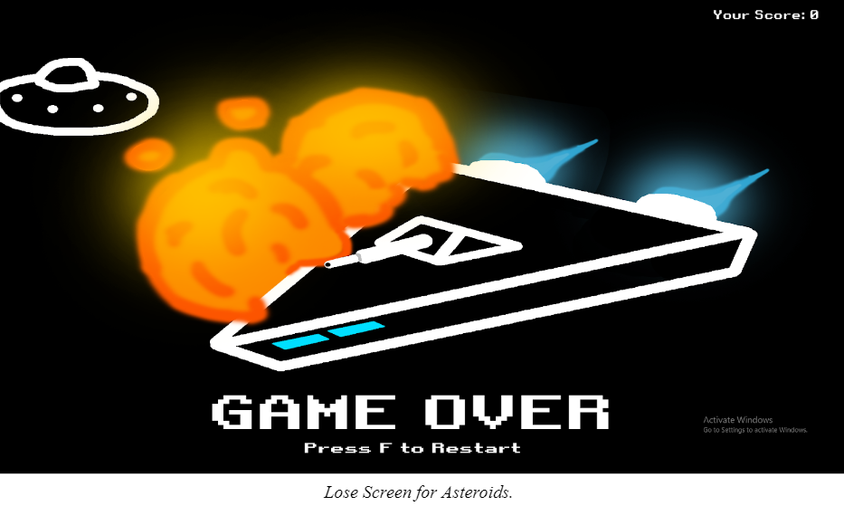

All of these games were programmed in java. We used a program called Processing to program it, it is a sketchbook used for visual arts.
We also designed a custom arcade table that the games were designed for.
It was essentially a TV laid on its back and it had a joystick with two buttons on each side for two players.
Don't Stop Moving!
This is the first full game I ever made. The requirements for the game was that it needed to have a moving object in the game, keyboard interaction, 3 collectible items,
5 different screens, including a title screen, playable level, win screen, lose screen and credits screen.
It must also contain music/sound effects and you also had to make a 30 second trailer for the game. Everything had to be made by yourself.
The concept of it was simple, you are a test subject stuck in an experimental facility in the future and you are trying to escape. You have to collect the 3 fragments of the masterkey in order to unlock the door and escape the facility.
You have to avoid the facility's defenses which includes sawblades, missiles, and lasers and also you can’t stop moving or else you die. We had about 3 weeks to make the game.
I started by first planning out a state machine for my game. Since there were only 5 different states the state machine was fairly linear.
I sketched the layout of the level to figure out where I want the key fragments and all the obstacles to be. Once all of that is done, I start programming the game.
I first programmed the state machine to make sure the levels progressed as intended. Then I programmed the player and all of his features like 8-directional movement with the keyboard.
After the player’s key features were done, the collectible keys were added to make sure the level progressed if you got all the keys and managed to get to the exit.
The various obstacles came next and there were 3 different types, sawblades, missiles, and a laser gun. The sawblades moved in linear fashion on a set path and so did the laser gun.
The missile bounced around the enclosed player area. Once all the programming was done, I did the art for the game in Adobe Photoshop.
The music was made using an online sound editor called BeepBox.
Overall I was proud of the game when I finished it. I managed to make a fully functional, playable game in 3 weeks. There were a few problems with the game, mostly that new players would not know what to do in the game.
It is not exactly clear that they have to collect the 3 key fragments nor do they know what they look like.
Obviously the game is not perfect but I did learn a lot making it. In making this project I learned how to use variables, functions, conditional statements like if else and classes in java.
I also learned more abstract concepts like finite state machines.
ZPG was my final project for my first year of Game Design and Development. This game was a 2 player versus game.
For this game we had to come up with a log line, a brief one sentence summary of the game, stating the story and goal of the game.
The following was the log line for ZPG.
“Earth in the future has a competition to keep the population under control, 2 people compete against each other through several tests, the competitor with the most victories, survives.”
This is where the game title stems from, ZPG is an abbreviation for zero population growth. I documented the process and design of this game which is described in more detail in this document.
To summarize the document, each level is a test of survival, so I wanted each level to test the players ability in an important skill for this post apocalyptic world.
The first level tests the player’s speed and agility by having to capture one anothers flag and bring it back to their base while avoiding obstacles.
The second level tests the players accuracy, they have a limited amount of ammo to shoot 5 targets, first to shoot all 5 wins.
The third level tests their resourcefulness, the players have to collect pieces to fortify their base. The fourth and final level tests their capability of defending the base they just fortified.
They have to defend against waves of robots and try to keep their base the healthiest.
I came up with a color palette for the game and also sketched the level designs.
I also laid out the ideas I wanted for the music, I wanted to add more effort into the songs for this game.
For the title screen I wanted a mysterious and ominous song, the instruction screen will have a more attention grabbing song.
The level song would start out slow and get faster, more intense and robot-like with each progressing level.
The credits and score screen would have quick beat and short note songs. For this game we had about a month to make it.
ZPG is the game I am most proud of, not because it was the most technical or elaborate game but because other students loved to play the game.
Students after school would come in to play the game against their friends. It was amazing to see students outside of the classroom wanting to play the game.
In this game, I was able to implement my knowledge of arrays, arraylists, and for loops to the game which allowed me to organize and manipulate the data for the several enemies in the game much easier.
Asteroids was my first major game that I made in my second year of game design and development. In my second year of the course we made more experimental games. As opposed to my first year where we just made 2 final games.
We made several smaller games throughout the year.
These games would usually consist of just a single playable level and were made just to experiment and implement a concept, not design and make a fully fledged game with a story and multiple levels etc.
For our first game in our second year, we had to recreate a classic retro game. Our options ranged from Frogger, Space Invaders, Centipede and Asteroids.
I chose Asteroids because the spaceship did not move in a traditional 4 or 8 directional movement, instead it moved based on an angle it rotated around and only moved forward.
Also, the ship would glide due to its momentum when you stopped moving to simulate the vacuum of space. I have never done something like this before so it seemed like an interesting challenge.
We had 2 weeks to make this game.

Asteroids was a simple game, gameplay wise but it challenged me to learn more about the use of angles and trigonometry in games.
With the time constraint I wasn’t able to have the game be as polished as I wanted it to be, there is no sound and a few glitches in the game.
The asteroids sometimes spawn inside of each other and the bullets shot by the UFO disappear when the UFO is destroyed.
I am satisfied that I was able to create a very similar experience to the original arcade game both visually and functionally.
This is the first game that I used a version control software to manage my games.
Before, we just uploaded our games to Google Drive but this time we used gitlab.
Since this was our very first time using gitlab we just uploaded our project to a repository.
We didn’t need to work with branches yet.
What is different about this game than the previous ones is that it is developed for mobile devices.
We had to utilize a third party library to be able to use the tilt and touch sensors as input for our game.
For this game we had to use one of the 3 tilt sensors, roll,pitch or yaw.
We also had to use a tap input and a swipe input.
AVALANCHE! Is a single player game where you are a snowball tumbling down a mountain.
There are hikers along the mountainside and you have to steer the snowball away from their tents and the hikers themselves.
The snowball is controlled with the roll axis or the x-axis sensor input.
You tap to start the game and to move on from the instructions.
For the swiping, you have to swipe away the hikers that are in the snowball’s path.
It is a challenging game, the snowball grows in size as it rolls further and further down the mountain making it harder to fit between the tents and avoid the hikers.
However, that makes it a little addicting wanting to beat each level and failing by the smallest of margins.
I structured this game differently than my previous games. Instead of using an if else chain to dictate what level you were on I used switch cases since they have the same effect but can contain less code.
I also used inheritance to save time having to write the same code. Since the obstacles, tents and people, have similar properties like a position, size, movement etc,
I made a parent obstacle class that has those properties and in the child classes, the tents and people, I changed the necessary property that differentiated the two.
This way allowed me to save time writing code since I did not have to rewrite the same variables for both classes. I did the same with the splash screens.
They all have an image and change the level you are going to next.
So I made a parent splash screen class and in the child classes I would just modify the image and the level it would go to without needing to rewrite the same function over and over again.